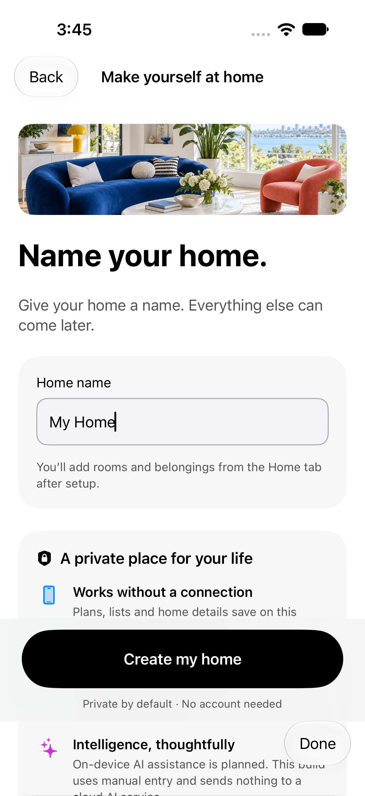
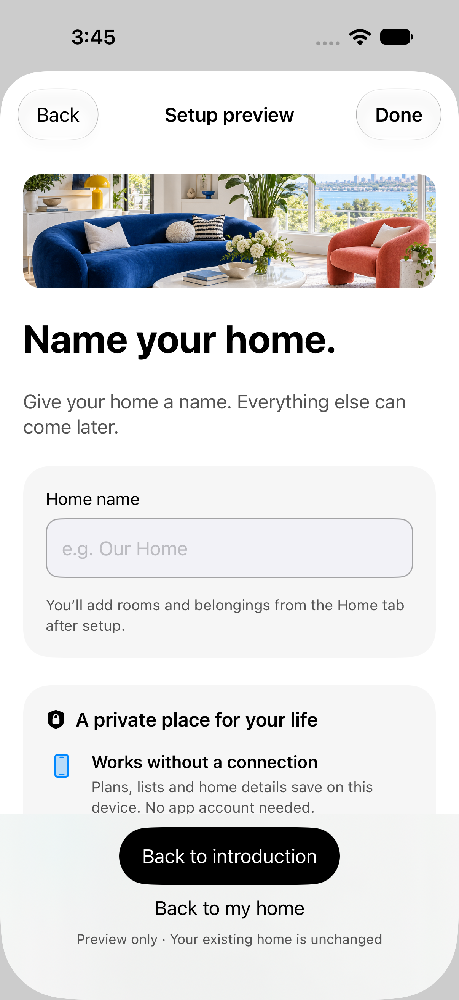
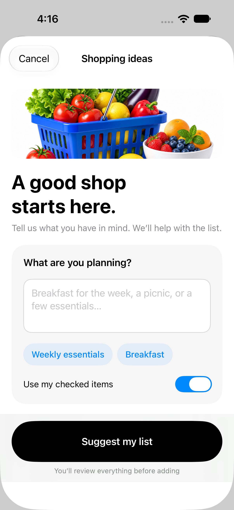
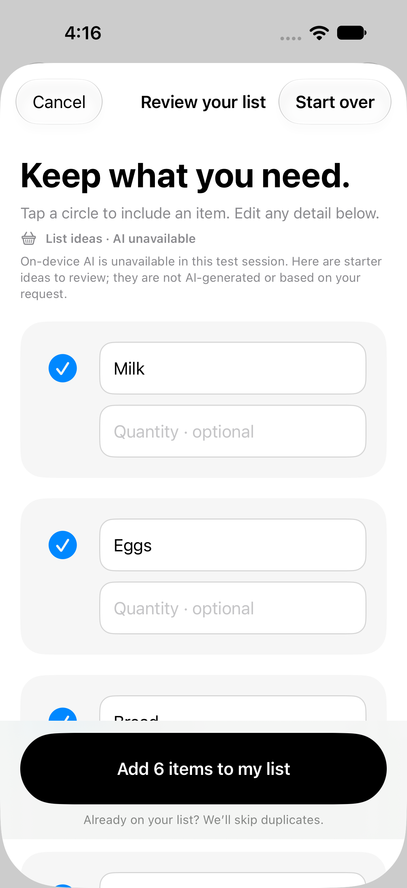
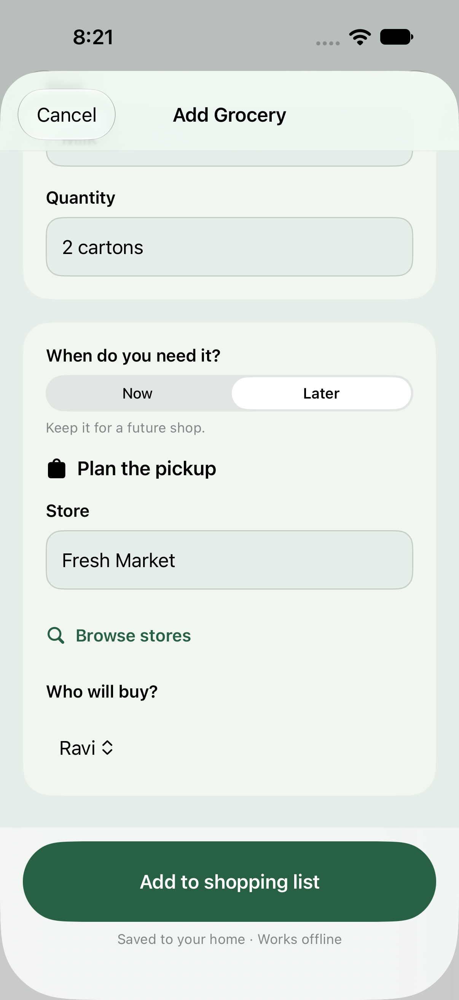
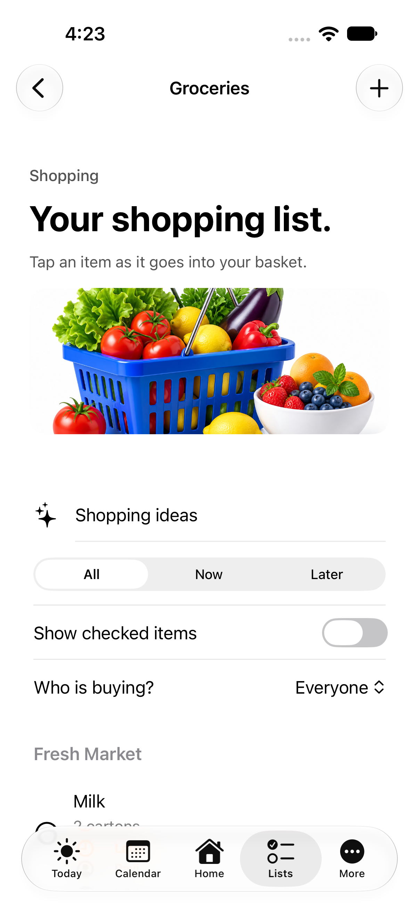
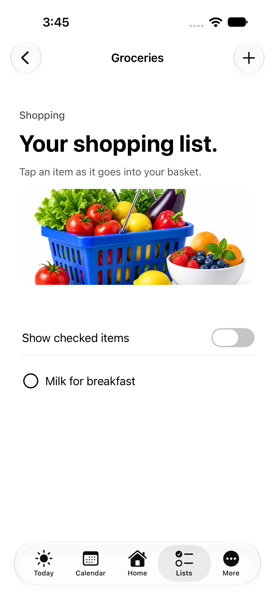
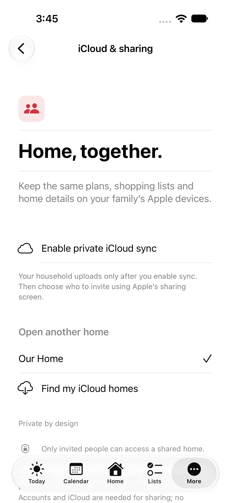

LunaHearth · Private home foundation
 A warm welcome
A warm welcome

Create a home. Add details later.

Preview setup safely from More
 Your home, in one place
Your home, in one place

Start with an idea

Review, then add

Plan who buys what

Shop by store and person

Lists that work offline
 Reminders without a connection
Reminders without a connection
 Made for day and night
Made for day and night

Private iCloud sharing